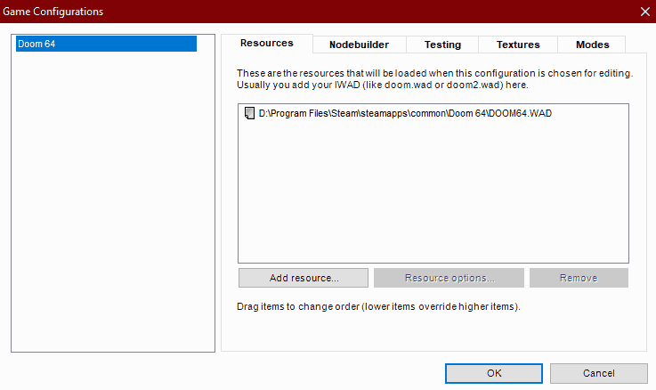
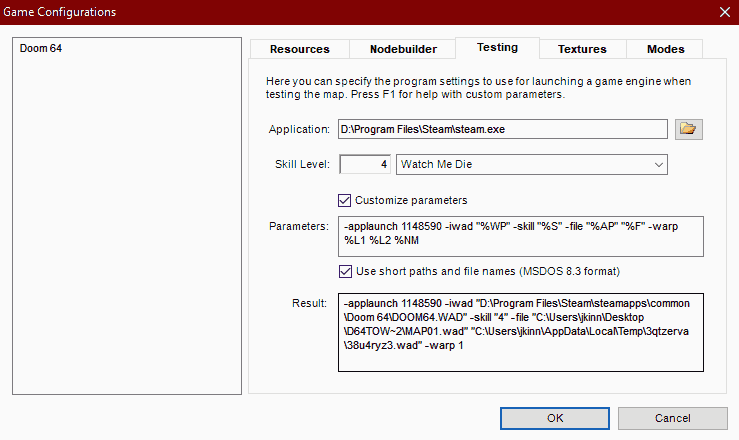
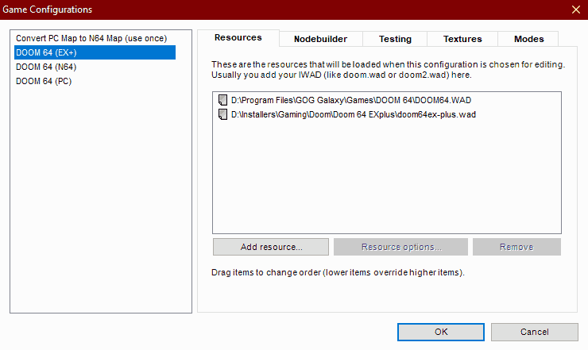

Doom Builder 64 Setup
Doom Builder 64 is the premier map editor for the native Doom 64 map format. It is a heavily modified version of Pascal Van Heiden's Doom Builder by Kaiser, with updates from Iori, and currently maintained by Kovic.
For compatibility with the most engines, the basic setup is to use the official Doom 64 Remaster to test your maps. In Doom Builder 64 there is a "Game Configuration (F6)" option in the "Tools" menu, which will let you set up Doom 64 and testing parameters. In the "Resources" tab select "Doom 64" at the left, then you can go to "Add resource..." and then find your "doom64.wad" in the Remaster directory. This will make sure every Doom 64 map will load the resources from the Doom 64 IWAD.
Next you will want to set the Doom 64 Remaster as your testing program under the "Testing" tab. For the GOG version, set the "Application" field to "DOOM64_x64.exe" located in your Remaster install directory. For the Steam version, set the "Application" field to "steam.exe" located in your Steam install directory. Then, check "Customize parameters", and into the "Parameters" text field add "-applaunch 1148590". This will tell Steam to launch the Doom 64 Remaster from DB64 without any warnings and straight into your custom map! Here is the full list of custom parameters: "-applaunch 1148590 -iwad "%WP" -skill "%S" -file "%AP" "%F" -warp %L1 %L2 %NM"
It is recommended that you test your level on the hardest difficulty, which for Doom 64 is "Watch Me Die" or skill 4. Then, you can balance accordingly for lower difficulties by reducing the number of enemies or adding extra items.
Doom 64 EX+ Considerations
If you are building maps using the bonus features of Doom 64 EX+, include the "doom64ex-plus.wad" in the game configuration resources. This will allow the additional enemy graphics to show up in the builder.
Plugins
Doom Builder 64 is a fork of Doom Builder 2 and therefore it supports many of the plugins built for that tool.